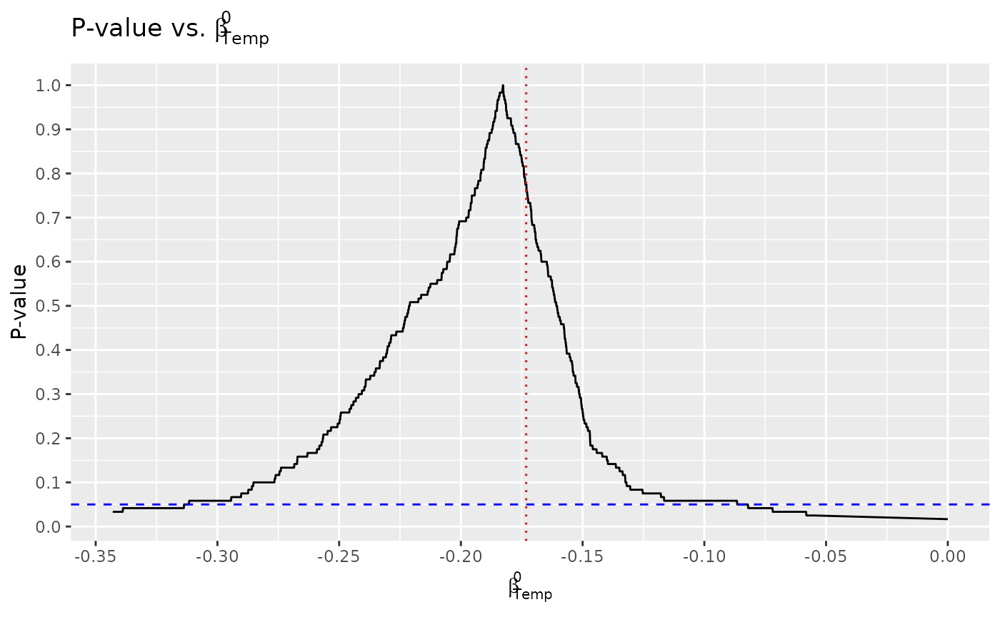
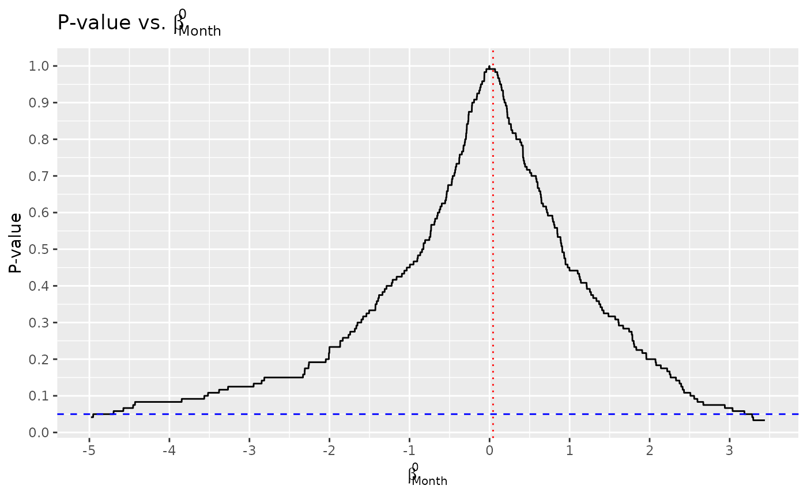

The exactt package computes a \((1-\alpha)\%\) confidence interval for
coefficients in a linear model using the method described in Pouliot
(2023).
exactt is hosted on GitHub at https://github.com/ian-xu-economics/exactt/. It can be
installed using the install_github() function in the remotes
package:
# install.packages("remotes")
remotes::install_github("ian-xu-economics/exactt")Citing the exactt package is convenient. The text
version and BibTeX entry is provided by:
citation("exactt")exactt
After installing exactt, we can attach the package to
our session using the base library() function:
The main function in exactt is exactt(). It
computes the \((1-\alpha)\%\)
confidence interval for coefficients in a linear model, with much
flexibility. To see all that exactt() provides, it is best
to run it on some examples.
Wind on Temp and
Month.
To demonstrate the exactt package, we use data of daily air
quality measurements in New York found in
datasets::airquality. We’ll investigate the relationship
between temperature (degrees F) and month (1–12) on wind (mph).
summary(datasets::airquality[c("Wind", "Temp", "Month")])
#> Wind Temp Month
#> Min. : 1.700 Min. :56.00 Min. :5.000
#> 1st Qu.: 7.400 1st Qu.:72.00 1st Qu.:6.000
#> Median : 9.700 Median :79.00 Median :7.000
#> Mean : 9.958 Mean :77.88 Mean :6.993
#> 3rd Qu.:11.500 3rd Qu.:85.00 3rd Qu.:8.000
#> Max. :20.700 Max. :97.00 Max. :9.000We can plug in standard formula notation into exactt().
If we don’t specify any additional parameters, then by default:
nBlocks = 5).variables = NULL).nPerms = factorial(nBlocks)).alpha = 0.05).studentize = TRUE).permutation = NULL).optimize = FALSE).
exactt1 <- exactt(Wind ~ Temp + Month,
data = datasets::airquality)
exactt1
#>
#> Call:
#> exactt(model = Wind ~ Temp + Month, data = datasets::airquality)
#>
#>
#> Summary:
#> Estimate Pr(>|t|) 2.5% W 97.5% W 2.5% 97.5%
#> Temp -0.17320 0.01667 -0.3137 -0.0821 -0.3137 -0.0821
#> Month 0.04382 0.99170 -Inf Inf -Inf InfIf tidyverse, latex2exp are installed, we can also
plug in the result from calling exactt() into the
exacttPlot() function, which plots the p-value against
\(\beta^0\).
exacttPlot(exactt1)
#> [[1]]
#>
#> [[2]]
Suppose we are only interested in the coefficient on the first
variable (Temp), then we can set variables equal to 1.
Likewise, if we are interested in the coefficient on the second variable
(Month), then we can set variables equal to 2.
exactt2 <- exactt(Wind ~ Temp + Month,
data = datasets::airquality,
variables = 1)
exactt2
#>
#> Call:
#> exactt(model = Wind ~ Temp + Month, data = datasets::airquality,
#> variables = 1)
#>
#>
#> Summary:
#> Estimate Pr(>|t|) 2.5% W 97.5% W 2.5% 97.5%
#> Temp -0.1732 0.01667 -0.3137 -0.0821 -0.3137 -0.0821Note that the 95% confidence interval is equal to the case where all variables are of interest because these confidence intervals are marginally valid.
The confidence interval generated using the exactt()
function is dependent on the ordering of the data. Some orderings will
achieve better power on average than other orderings. Furthermore, when
sample size is small, and the number of blocks is large, optimization
will have a larger effect on average. exactt() uses the
genetic algorithm via the GA algorithm to find the best ordering on
average. We only look at the X variables.
If optimization is desired, we can set optimize to
TRUE. We can also pass through whatever other parameters
that the GA::ga() function normally accepts. For instance,
we can set maxiter = 10, and seed = 2024. Note
that if optimize is FALSE and the other parameters are
still passed through, optimization will not be performed.
exactt3 <- exactt(Wind ~ Temp + as.factor(Month),
data = datasets::airquality,
variables = 1,
optimize = TRUE,
maxiter = 1,
seed = 2024)
exactt3
#>
#> Call:
#> exactt(model = Wind ~ Temp + as.factor(Month), data = datasets::airquality,
#> variables = 1, optimize = TRUE, maxiter = 1, seed = 2024)
#>
#>
#> Summary:
#> Estimate Pr(>|t|) 2.5% W 97.5% W 2.5% 97.5%
#> Temp -0.1953 0.008333 -0.2464 -0.0933 -0.2464 -0.0933If the output from running the GA::ga() function is not
desired, we can set monitor = FALSE.
It is important to remember that optimizing only increases power on average since we optimize the ordering of the data based on the regressors. It is possible that for any singular case, optimizing the ordering of the data increases the width of the confidence interval compared to the original order.